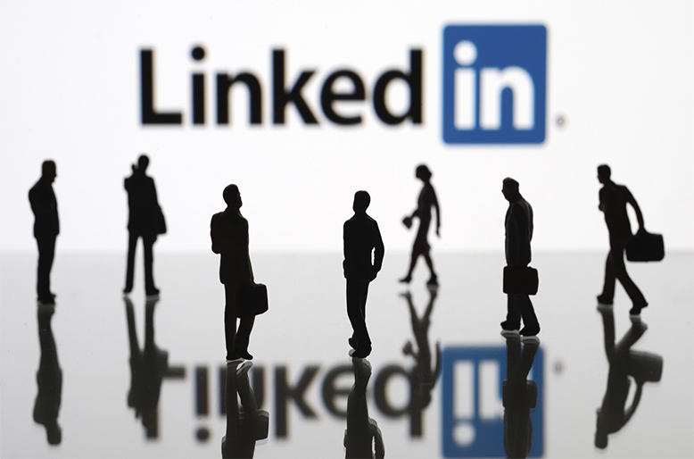

Today, Microsoft and Salesforce are archrivals that recently battled each other to buy the social network LinkedIn — hungry for its troves of highly personalized data about businesspeople. When Microsoft won, Salesforce threw cold water on the acquisition by saying it would violate European antimonopoly laws.
But not long ago, the two software giants were tight. They even talked about merging their businesses — not once, but twice. The second round of talks hasn’t previously been reported.
A behind-the-scenes look at the fight between Salesforce, which upended business software by pioneering a rent-by-the-month model, and Microsoft, which is racing to adjust, exposes an awakening in corporate America about the value of social networks like LinkedIn and Twitter. The data stashed in their servers has elevated services like these from an amusing distraction to an essential tool that helps big businesses understand their customers.
But now that tech giants like Microsoft and Salesforce covet that data, they are finding that only a few companies have it. That’s partly why Salesforce considered bidding recently for Twitter, despite its growth struggles. Microsoft was so eager to have LinkedIn that it agreed to pay $26.2 billion in cash for it, the biggest deal in its history. Salesforce fired back, complaining that Microsoft could use LinkedIn data to increase its control of the business software market.
A Budding Friendship
Salesforce was founded in 1999 to bring about “the end of software as we know it,” as Mr. Benioff liked to say. The slogan appealed to Mr. Benioff, a former Oracle executive who alternates between the brashness of a Silicon Valley tycoon and the mellowness of a Hawaiian surfer.
At the time, software used by businesses was usually sold through huge licensing deals for software that would be installed directly on company PCs. Mr. Benioff’s idea was to undercut that model: He would offer the same thing over the internet, without expensive installations, and customers would pay by the month.
The idea proved prescient. Though it only recently began turning a profit, Salesforce is on track to have more than $8 billion in revenue this year, representing annual growth of about 25 percent. The total market value of the company is over $50 billion. Salesforce is the largest tech employer in San Francisco, and the company will move into the city’s tallest building, Salesforce Tower, when it is completed.
It took Microsoft years to see the potential in what Salesforce was doing. Microsoft had its own C.R.M. product, Dynamics, but it took a back seat inside an empire that, under the former chief executive Steven A. Ballmer, was consumed with battling more prominent competitors like Apple, Google and Sony.
 To go places and do things that have never been done before – that’s what living is all about.